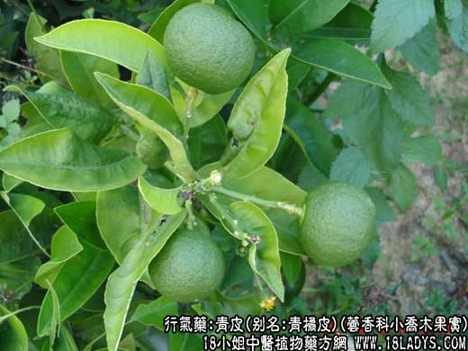
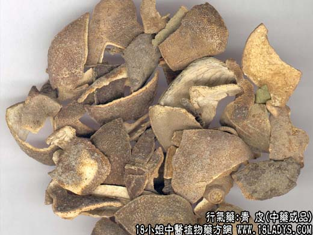

【中药概述】
青皮，别名：青橘皮、青柑皮，为芸香科小乔木橘的幼果或未成熟果实。苦、辛、温。归肝、胆、胃经。
1．肝气郁滞：用治胁肋胀痛，常配柴胡，郁金，香附等；治乳房胀痛用瓜蒌，香附，橘叶等。
2．用于食积气滞、胃脘胀痛。常与草果，山楂，麦芽同用，如（沈氏尊生<青皮丸>）。
【药物形态】
青皮，果皮剖成4裂片，裂片长椭圆形，长4～6cm，厚0.1～0.2cm。外表面灰绿色或黑绿色，密生多数油室；内表面类白色或黄白色，粗糙，附黄白色或黄棕色小筋络。质稍硬，易折断，断面外缘有油室1～2列。气香，味苦、辛。个青皮，呈类球形，直径0.5～2cm。表面灰绿色或黑绿色，微粗糙，有细密凹下的油室，顶端有稍突起的柱基，基部有圆形果梗痕。质硬，断面果皮黄白色或淡黄棕色．厚0.1～0.2cm，外缘有油室1～2列。瓤囊8～10瓣，淡棕色。气清香，味酸、苦、辛。
【药效鉴别】本品行散，入于肝胆，善破气疏肝，又能助脾胃以消积化滞。
【临证应用】1.青皮80g，白芥子，苏子，胆草，当归30g，研末每服10g，治肝气不和、胸肋刺痛；2.青皮研粗粉，每服10g，水略煎服，治乳腺增生、乳腺癌。
【药理作用】挥发油对胃肠道有温和的刺激作用，能促进消化液的分泌和排除肠内积气。挥发油中的柠檬烯有祛痰作用。水煎醇沉液，有显著的升压作用，且能兴奋呼吸，对失血、创伤、输血等不同原因造成的实验休克，亦有一定保护和治疗作用。
【化学成分】各种青皮均含挥发油，且多含黄酮甙等。
【用量用法】3——10g，水煎服，或入剂。
【使用注意】性烈耗气，气虚者慎用。
醋青皮：苦微辛酸，温。引药入肝，增强其疏肝、理气、止痛之功。多用于肝气郁滞所致的胁肋胀痛、乳房胀痛及疝气疼痛等症。
本文解释权归介绍中草药名称的中药大全所有，本文地址：https://www.daquan.com/post/1982.html